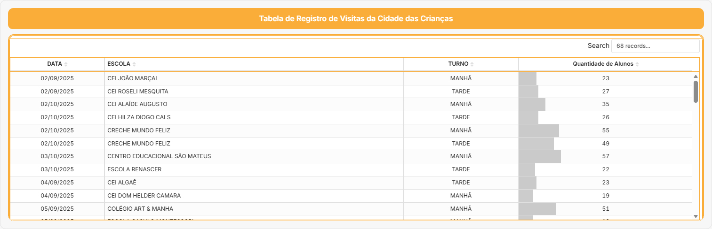

📊 Dashboard – Visitas à Cidade da Criança (Página 1)
Este espaço integra o planner com o Dashboard de Visitas da Cidade da Criança de Fortaleza.
Observação: O dashboard contabiliza visitas a partir de setembro/2025, quando as visitas passaram a ser homologadas em planilhas.
🔗 Fonte de Dados
- Planilha de registros (Google Sheets)
- Atualização contínua
- Integração com o Observa Infância Viva
🖼 Tabela de Registro de Visitas da Cidade das Crianças
A imagem abaixo apresenta a tabela completa de registros, com data, escola, turno e quantidade de alunos.

📈 Síntese dos Resultados (Análise Consolidada)
Os resultados são mensuráveis e demonstram o impacto crescente da Cidade da Criança:
- Entre 1º de setembro e 22 de outubro de 2025 foram registrados:
- 1.624 participantes
- em 134 atividades pedagógicas
- realizadas em 24 dias
-
envolvendo cerca de 39 escolas
-
No eixo saúde, em 18 de outubro de 2025 ocorreu um mutirão de vacinação com 199 doses aplicadas:
- Influenza: 61
- Hepatite B: 28
- Febre Amarela: 27
-
DT: 25
-
A distribuição por turno no período foi:
- Manhã: 868 participantes
- Tarde: 516 participantes
-
Dia completo: 240 participantes
-
Quanto ao fluxo geral de visitas do parque, estima-se:
- 57.920 visitantes no período de 10/08 a 10/10;
- Subperíodo 23/09 a 10/10: 14.320 visitantes;
- Subperíodo 11/10 a 21/10: 11.420 visitantes, incluindo estimativa conservadora de > 5.000 visitantes no Domingo do Dia das Crianças;
- O acumulado atingiu 69.930 visitantes até 23/10/2025.
Esses indicadores alimentam o Observa Infância Viva e orientam:
- ajustes de sombreamento e plantio;
- definição de programação pedagógica e cultural;
- estratégias de mobilidade ativa e acessibilidade;
e evidenciam viabilidade, impacto e integração intersetorial da Cidade da Criança.
📝 Minhas leituras dos dados
- O que os números mostram sobre o uso da Cidade da Criança:
- Períodos com maior concentração de visitas:
- Tipos de instituições que mais frequentam:
- Possíveis ajustes no planejamento das próximas visitas: